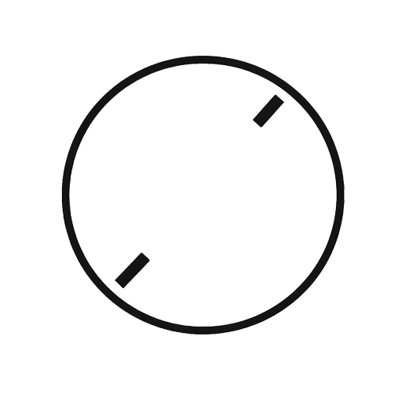

01

Solo · 기획 → 디자인 → 개발 → 배포
DIFF
시간감각 조정 타이머 — Expected vs Actual
Problem
"30분이면 될 것 같은데" 시작한 작업이 2시간이 걸린다. 시간 예측 오류는 반복되지만, 측정 데이터 없이는 자신의 편향 패턴을 인식할 수 없고 개선되지 않는다.
Solution
작업의 예상-실제 시간 차이를 측정하여 Faster/Slower/Accurate로 과소평가/과대평가 경향을 파악. 개인의 추정 편향을 정량화하고, 패턴 인식과 예측 개선을 가능하게 한다.
Concept
시간의 명확성을 최우선으로. 블랙 모노톤 베이스에 빨강/파랑/초록으로 차이를 시각화하여 직관적으로 인지하게 설계.
Key Features
- 예상/실제 시간 비교 타이머 (최대 4시간)
- Faster/Slower/Accurate 자동 판정
- 카테고리별 통계 및 편향 분석
- Google 로그인 & 클라우드 백업